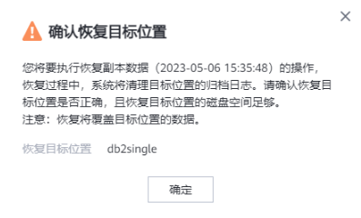

当需要对已备份的DB2数据库/表空间集进行恢复时，可以参考本节恢复DB2数据库至原位置或新位置。
前提条件
恢复前请确保恢复目标位置的数据目录剩余空间大于恢复副本缩减前大小，否则恢复将失败。
注意事项
恢复过程中系统会自动断开与目标数据库的会话连接，无需用户手动执行此操作。并且恢复过程中用户请勿建立与该数据库的新会话连接，否则会导致恢复任务失败。
操作步骤
- 选择“数据利用 > 副本数据 > 数据库 > DB2”。
- 您可以以DB2资源维度或以副本维度查找副本，本节以资源维度为例进行说明。
在“资源”页签，根据资源名称查找到需要恢复的资源，并单击资源名称。
- 选择副本恢复的资源。
- 指定副本或指定时间点进行恢复。
- 指定副本恢复
- 依次选择年、月、天找到副本。
当日期上显示
 ，即表示该月、该天存在副本。
，即表示该月、该天存在副本。 - 单击
 ，进入副本数据页面。
，进入副本数据页面。 - 在副本数据页面单击，单击需要恢复的副本所在行的。
- 依次选择年、月、天找到副本。
- 指定时间点恢复
- 依次选择年、月、天找到副本。
当时间上显示
 ，即表示该月、该天存在副本。
，即表示该月、该天存在副本。 - 单击
 ，进入副本数据页面。
，进入副本数据页面。 - 在副本数据页面单击
 ，在时间轴上选择蓝色覆盖区域的副本，单击。
，在时间轴上选择蓝色覆盖区域的副本，单击。
- 对于1.5.0版本，时间轴上最多仅展示100个副本，单击
 可以查看所有副本。
可以查看所有副本。 - 执行时间点恢复时，由于管理界面无法获取恢复时所使用的副本信息，因此，在恢复任务和相关的事件页面，用户无法看到该恢复任务的副本信息。
- 对于1.5.0版本，时间轴上最多仅展示100个副本，单击
- 依次选择年、月、天找到副本。
- 指定副本恢复
- 恢复DB2数据库至原位置或新位置。相关参数说明如表1。
- 单击“确定”。
- 系统弹出如下提示，确认提示内容后，单击“确定”。
